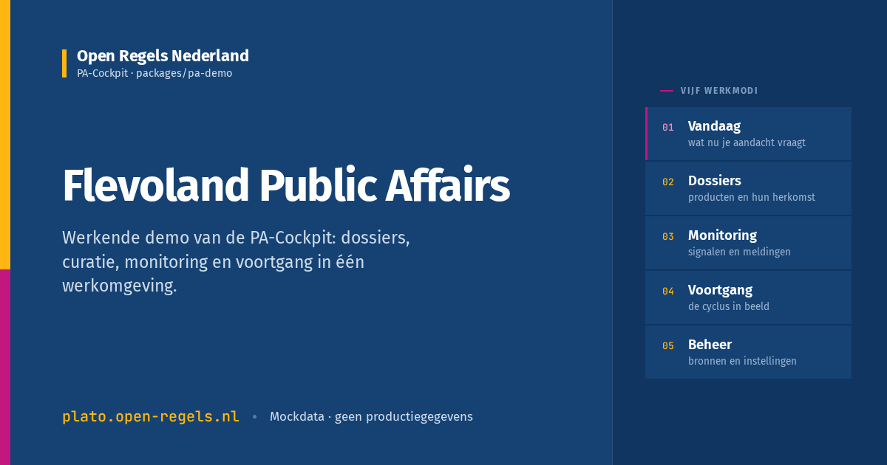

Feed width — 500px

acc.plato.open-regels.nl
Flevoland Public Affairs
Werkende demo van de PA-Cockpit: dossiers, curatie, monitoring en voortgang in één werkomgeving.
Compact — 320px
acc.plato.open-regels.nl
Flevoland Public Affairs
Werkende demo van de PA-Cockpit.
Chat thumb — 200px
acc.plato.open-regels.nl
Flevoland Public Affairs